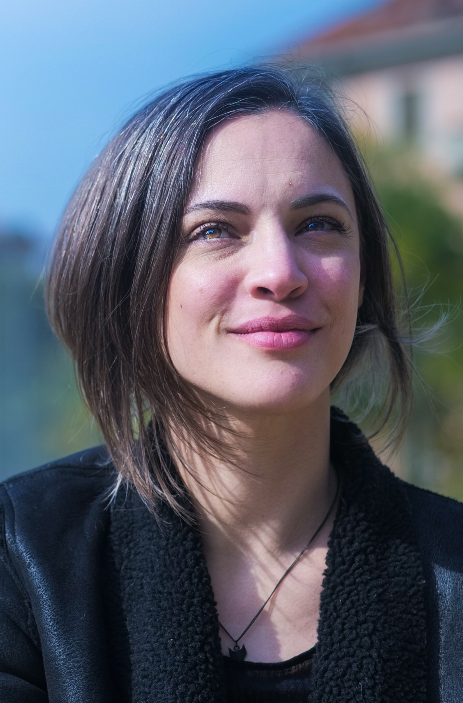

Sono brasiliana, laureata in Relazioni Internazionali. Dopo nove anni di esperienza nella gestione di progetti per eventi aziendali, nel 2020 ho intrapreso la carriera nello sviluppo software. Mi sono trasferita in Italia nel 2021 e possiedo anche la cittadinanza italiana. Attualmente sto studiando lo sviluppo full-stack per ampliare le mie competenze professionali.
| Periodo | Azienda/Organizzazione | Ruolo | Descrizione |
|---|---|---|---|
| apr - ott 2025 | RAPOSINHA.DEV | Sviluppatrice Front End | Ho fatto una breve pausa nella mia carriera quest’anno per una situazione familiare. In questo periodo ho completato un’app stagionale dedicata al cibo, realizzato un semplice gioco in JavaScript e attualmente sto lavorando al mio sito e portfolio. |
| apr 2023 - mar 2025 | LALETU.DE (Germania - Remote) | Sviluppatrice Front-End | Implementazione design reattivo, sviluppo e manutenzione endpoint API, diagnostica e risoluzione bug, collaborazione con backend e project manager. |
| 2022 - 2023 | LIBERO PROFESSIONISTA | Insegnante d'Inglese | Lezioni private personalizzate con focus su conversazione e scrittura. |
| ago 2021 | COMUNE DI SAN PAOLO (Remote) | Sviluppatrice Front End e QA | Sviluppo front-end e analisi qualità per il progetto del patrimonio culturale "Circuito da memória Paulistana". |
| 2013 - 2020 | SOAP, STORYLAND, MONKEYBUSINESS, CONTÉ (Brasile) | Manager di Progetto | Gestione progetti di comunicazione ed eventi per grandi aziende (Sanofi, John Deere, BASF, Knauf, Ambev, PepsiCo, Coty, Havaianas). Contatto diretto con clienti per negoziazioni budget e scadenze. |
| 2014 - 2015 | YOUMOVE FRANCHISE (Brasile) | Insegnante di Inglese e Coordinatrice Corso Teens | Insegnamento a ragazzi e adulti con metodo multilivello. Coordinamento corso di inglese per adolescenti. |
| 2008 - 2012 | FREELANCE (Brasile) | User Interface Tester | Test UX per siti web, collaborazione con aziende specializzate come Try Consulting Brazil per segnalazione errori e suggerimenti migliorativi. |
| 2007-2010 | Pontificia Universidade Catolica di Sao Paolo | Laurea | Relazioni Internazionali |
| 2015 | Sandbox | Corso Libero | Marketing Digitale |
| 2011 | ESPM - Escola Superior de Propagrande e Marketing | Corso Libero | Gestione di progetti pubblicitari |